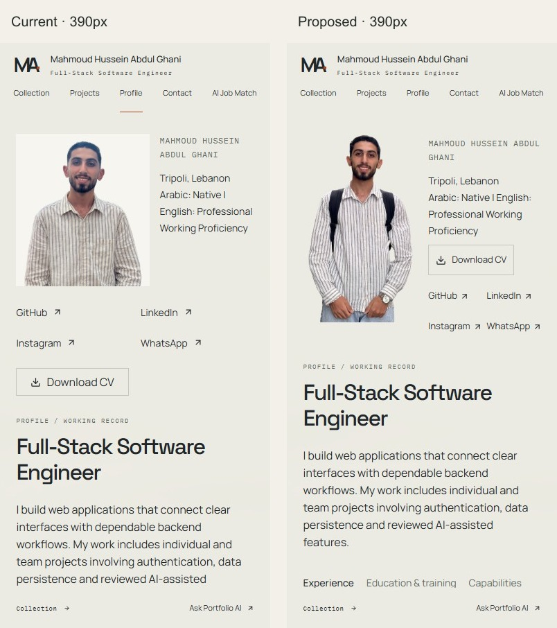
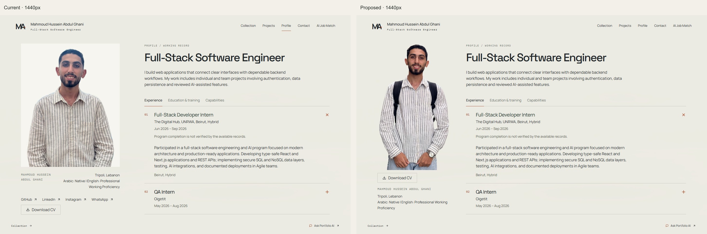
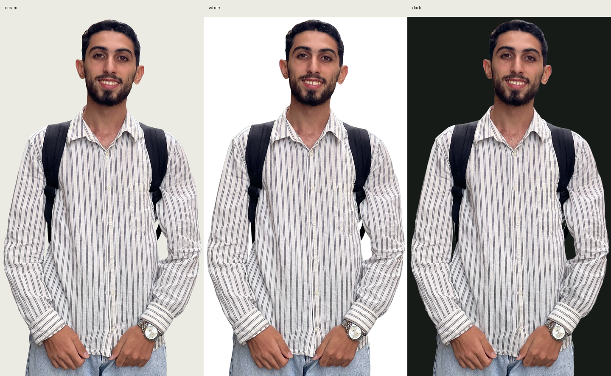
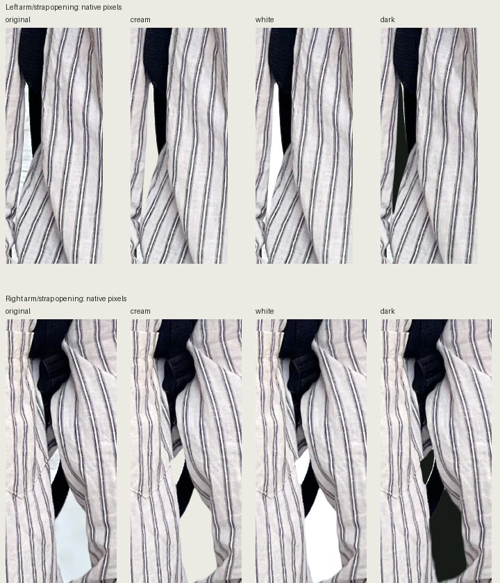
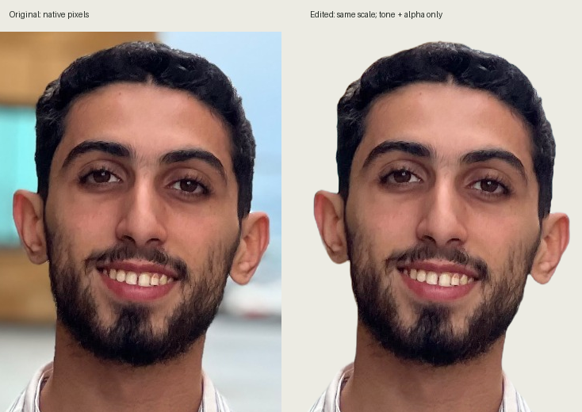

Profile portrait prototype
Static portrait review: the confirmed original 1000689121.jpg, extracted from hair to below both hands, with a mild shadow lift. The face, posture, watch and hands are photographic. The production Profile remains unchanged. Speaking and gestures are still outstanding.
Current Profile · Interactive review prototype · Download comparison package
Use the refinement Vercel Preview linked in the draft PR above #34. Preview authentication still applies. Noindex controls indexing; it does not restrict access.
390px — current / proposed

1440px — current / proposed

Alpha inspection — actual cream / white / charcoal

Native-scale edge checks: cream · white · charcoal. Pale sleeve opacity was repaired in the alpha only. Hair, ears, natural shoulders, sleeves, arm openings, hands and jeans remain intact. Fine edge detail is limited by the compressed photograph.



Likeness — original / edited, at equal native scale

No face generation, beautification, sharpening, upscaling or posture changes. The backpack and straps remain: this workflow cannot convincingly reconstruct the covered striped shirt. Clothing-only retouching is a separate remaining requirement.
Untouched original · PNG master · Lossless WebP · Processing record


Current 320px · Proposed 320px · Current 768px · Proposed 768px · Browser validation


Loading state · Image failure fallback · Changed files · Design QA · Future video requirements


The 960×1696 crop uses existing source detail; enlarging it creates no additional authentic detail. This is a static prototype, with one 600ms entrance and static reduced motion. Promoting a deployment does not adopt this portrait: the default /profile remains unchanged and Production builds disable review routes.